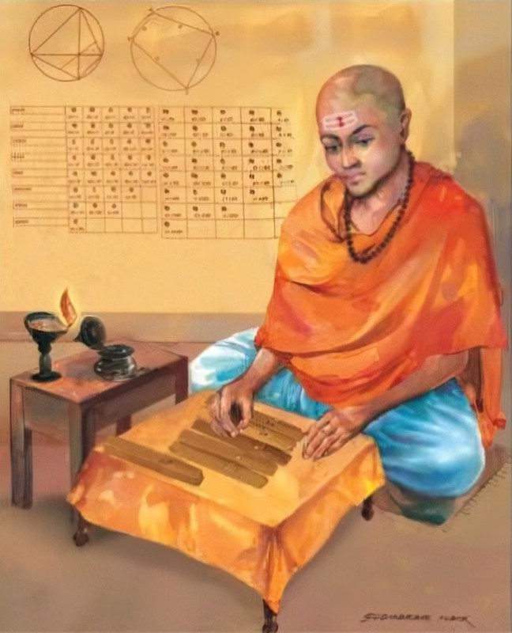

Welcome to the Mathematical World!
Mahāvīra (c. 9th century CE)
Indian Mathematician and Jain Scholar
Mahāvīra, also known as Mahāvīrācārya, was a prominent mathematician of 9th-century India, likely active in Karnataka under the patronage of the Rashtrakuta dynasty during King Amoghavarsha’s reign (814–878 CE). He was influenced by the intellectual climate of Jain scholars, engaging deeply with mathematics, astronomy, logic, and philosophy. His landmark work, Gaṇitasārasaṅgraha (The Compendium of the Essence of Mathematics), composed around 850 CE, became foundational for medieval Indian mathematics.
Systematic Structure of Mathematics
In Gaṇitasārasaṅgraha, Mahāvīra organized mathematics into nine chapters covering: operations with numbers, fractions, rules of zero, series, geometry, permutations and combinations, and practical problem-solving. This comprehensive treatise refined and extended the works of Aryabhata, Brahmagupta, and Bhaskara I.
Zero and Negative Numbers
Mahāvīra extended the use of zero and explained arithmetic operations involving it. For example, subtracting a number from itself yields zero. He refined Brahmagupta’s earlier rules and emphasized practical applications.
Fractions and Decimals
He provided clear procedures for operations with fractions — addition, subtraction, multiplication, and division — making fractional arithmetic accessible to students, merchants, and scholars.
Geometry and Mensuration
Mahāvīra gave rules for calculating areas and volumes of geometric figures such as triangles, quadrilaterals, circles, spheres, and cones. For example, the area of a triangle is:
\[ A = \frac{1}{2} \times \text{base} \times \text{height} \]
Series and Progressions
He studied arithmetic and geometric progressions. For instance, the sum of an arithmetic series is:
\[ S_n = \frac{n}{2} (a + l) \]
where a is the first term, l is the last term, and n is the number of terms.
Permutations and Combinations
Mahāvīra discussed arrangements and selections of objects, anticipating combinatorial reasoning and building on Pingala’s earlier work on prosody. He included practical examples like:
- “Find the number of combinations possible when choosing r items out of n.”
- “Given the sum of the first and last terms of an arithmetic progression and the number of terms, find the total sum.”
Legacy
- Educational Influence: Gaṇitasārasaṅgraha became a standard textbook in Indian mathematics for centuries.
- Impact on Later Scholars: Influenced mathematicians such as Bhāskara II (1114–1185 CE).
- Advancement of Mathematical Knowledge: Refined zero, fractions, series, geometry, and combinatorics, preserving and clarifying classical Indian mathematics.
- Transmission of Knowledge: Mahāvīra ensured continuity of Indian mathematical traditions through the medieval period.
Conclusion
Mahāvīra exemplifies the Jain tradition of systematic and rigorous mathematics, blending practical computation, geometric reasoning, and combinatorial insight. His treatise stands as a cornerstone in the continuity and enrichment of Indian mathematical knowledge.